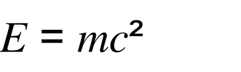

Nuclear Fission
Introduction
Nuclear fission happens when a neutron slams into another atom, forcing it to split into two smaller atoms. These two atoms are caled fission products. There are more neutrons that are produced, creating a chain reaction. When this happens it releases a lot of energy. The discovery of thermonuclear fission was done by 3 scientists, Flyorov (a Soviet physicist), Petrzhak (a Polish and Russian physicist), and Kurchatov (another Soviet physicist who led the Soviet nuke program). These scientists were conducting experiments to prove that uranium's fission rate was not important, but they soon thought otherwise.

Nuclear fission in nukes
Scientists put the ingridents to create a nuclear fission scenario in nukes, and when the nuke is detonated, the fission occurs releasing massive amounts of energy in the form of x-ray's and gamma rays, which make a lot of heat. It also creates pressure for nuclear fusion.
Uses of nuclear fission
Since nuclear fission holds large amounts of free energy, it is usually used in nuclear power plants to create electricity as it is a dense source of energy and power. This energy produced, which fission creates, is used to do things that need electricity. It can also power turbines to generate more electricity, in the way that windmills create electricity.
Environmental issues
Nuclear fission produces nuclear waste, which is deadly. It is hard to dispose of this waste, creating problems. If there is a nuclear meltdown, many people will die, in painful ways.
E=MC^2
You may have heard of this equation but what does it really mean?
The "E" stands for energy.
The m stands for mass.
The c stands for the speed of light.
This equation may seem simple, but it is much more complex than you might think. Basically, the equation says that matter contains huge amounts of energy. The speed of light squared is huge, just proving the point that each small atom can produce enough energy to cause some serious damage. The process of nuclear reactions helps to harness that energy into a major weapon that can cause destruction.
It states that the increased relativistic mass of a body, multiplied by the speed of light squared, is equal to the kinetic energy of that object.